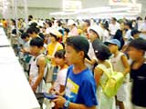
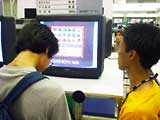
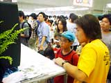
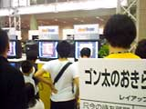
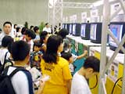

| #6 ゲームボーイカラー体験コーナー（ライセンシー）その３ |
page1 ・・・ page2 |
| ●金田一少年の事件簿 〜10年目の招待状〜 11月発売予定 バンプレスト |
| マンガにアニメに小説に、様々なジャンルで展開している「金田一少年の事件簿」。あの見事な推理ショーを、ゲームボーイで楽しめます。体験プレーを終えた人はみんな、名残惜しそうにモニターの前から離れていきます。やっぱり先が気になるのでしょう。 |
| ●仙界異聞録 準堤大戦 〜TVアニメーション『仙界伝 封神演義』より〜 11月発売予定 バンプレスト |
| 太公望大人気！ 去年アニメ化され、子供達の絶大な人気を集めた「仙界伝 封風演義」ということで、体験コーナーはプレーを待つ子供達でいっぱいです。完全オリジナルストーリ−による太公望のもう1つの冒険を、ゲームボーイで楽しんでくださいね。 |
| ●ザ・ブラックオニキス 2000年発売予定 ビーピーエス |
| 日本のコンピューターゲームそう明期に登場した、「ブラックオニキス」の復刻版。ゲームボーイカラー専用ということで、グラフィックはかなり進化していますが、実は、昔のパソコン風画面でも遊べるんです。お父さんや海外から取材にきていた人が、懐かしそうにプレーしていました。 |
| ●牧場物語GB3 ボーイ・ミーツ・ガール 9月29日発売予定 ビクターインタラクティブソフトウェア |
| 様々な新要素が追加された牧場物語シリーズの最新作が、もうすぐ発売されますよ。今回は男の子と女の子で大幅にストーリーが違ってくるうえに、なんと、愛情度を上げていけば、結婚できるようにもなっているそうです。ほのぼのした画面とかわいいキャラクターがウケたようで、"ぼくもの"シリーズのファンはもちろん、小さな女の子もよくプレーしていました。 |
| ●スーパーロボットピンボール 12月上旬発売予定 メディアファクトリー |
| 「スーパーロボット」シリーズに、新たなジャンルの登場です。今度は敵とピンボールで勝負！ テクニックを磨いてピンボール技を完成させ、ボスを倒してスーパーロボットをデータ−ベースに登録しましょう。登場ロボットは100体以上になるそうですよ。子供達より大人の姿が目立つ、数少ないコーナーのうちの1つでした。大人になっても、お父さんになっても、好きなものは変わらないんですよね。 |
| ●ゴン太のおきらく大冒険 9月29日発売予定 レイアップ |
| テレビCMでおなじみ、犬のゴン太がゲームになりました。ミニゲームはイベントを楽しみつつ、盗まれた絵日記を取り戻してください。CMで登場するシーンと同じイベントやゴン太のとぼけた姿に、並んでいる親子からは笑いがもれていましたよ。発売されたら、ぜひ親子で楽しんでくださいね。 |
| ●スペースネット SN−01（仮称） ●スペースネット SN−02（仮称） 12月1日発売予定 イマジニア |
| 宇宙調査機関のエージェントとして、探査マシン「スペースネット」を駆使しながら未知の銀河で冒険を繰り広げスペースRPGです。「SN-01」と「SN-02」では、マシンの性能が少し違うそうですよ。「もしかしたらストーリーもちょっと変わるかもしれません（笑）」とはスタッフの方の談。 |
| ゲームボーイカラー体験コーナー（ライセンシー）その３ page1 ・・・ page2 |
|
|